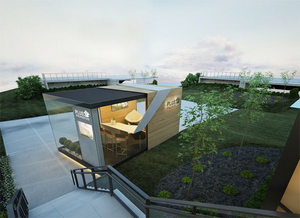
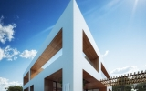

建筑DESIGN-产品
architectural desigh ; buliding design
服务范围
——service——
描述
- 信息 Information
- 信息，指音讯、消息、通讯系统传输和处
理的对象，泛指人类社会传播的一切内


MORE
公司简介
——about us——
描述
随着社会的发展和科学技术的进步，建筑所包含的内容、所要解决的问题越来越复杂，涉及的相关科学越来越多，材料
上、技术上的变化越来越迅速，单纯依靠师徒相传、经验积累的方式，以不能适应这种客观现实；加上建筑物往往要在
很短时期内竣工使用，难以由匠师一师二任，客观上需要更为细致的社会分工，这就促使建筑设计逐渐形成专业，成为
一门独立的分支科学。
- 罗尼索尔斯
- 建筑师艺术名家
- 他是一个嗅觉很灵敏的人，我会在下一个猎物出现
的一瞬间，就嗅到它的味道，然后牢牢地抓住它不
撒手，不管它挣扎的有多厉害。我做事很有主心骨 - MORE
- 弗兰克阿布西朗
- 空间处理独具匠心
- 用最新的材料，最先进的技术表达传统的思想、哲
学、美学。信仰和生活方式，将不同的文化同一
性和当代建筑结合起来，这也得到了新世界的理解
和公认 - MORE
- 扎哈劳延世
- 他总是太狂妄，太执着于真实
- 他追求精致、洗练的造型达到极致。不只是建筑本
身，其他如对美术品的安放、收藏环境等，他都下
了相当的功夫。太执着于真实 - MORE
- 伊布艾罗
- 为现代都市增添了光辉
- 她重视民族文化与西方现代文化的结合，为建筑的
地方性多种多样，不同的地方性相互渗透，成为现
代建筑不可缺少的内容 - MORE
资讯中心
——News——
描述
- 2018-01-18
- 2016年中国经济数据公布 GDP总量破70万亿元
- 按照日程安排，国家统计局今日将公布2016年国内生产总值GDP
等重磅数据。根据官方预测，2016年中国经济总量会突破70万亿
- 2018-01-18
- 智慧城市建设莫入误区
- 智慧城市是城市治理创新的重要方面。国家信息中心信息化研究部
副主任单志广认为，智慧城市建设目前主要存在"三高两低"问

-

- 2018-01-18
- 当结构邂逅设计 发生了什么？
- “9·30新政”对楼市的影响同样表现在学区房成交上。据中介机构
统计数据显示，在选取的20个北京典型学区房样本成交价显示，目